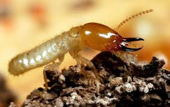
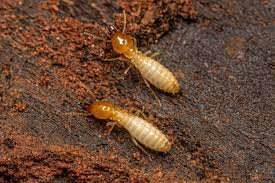
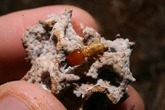
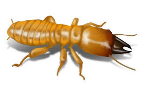
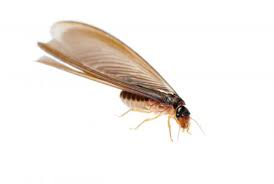

Hama Rayap
Dikenal sebagai "silent destroyer", rayap dapat menghancurkan struktur bangunan dan investasi Anda dari dalam tanpa terdeteksi selama bertahun-tahun.
Spesies Utama

Rayap
Tanah
Coptotermes formosanus. Memerlukan kelembapan dari tanah dan membangun terowongan lumpur untuk akses makanan.
• Merupakan jenis yang paling destruktif, mampu menghabiskan struktur kayu bangunan dengan sangat cepat.
Rayap
Tanah Asia
Coptotermes gestroi. Spesies invasif yang sangat agresif dan umum ditemukan di area perkotaan Indonesia.
• Menyerang kusen pintu, jendela, hingga furnitur kayu yang menempel pada dinding.

Rayap
Gundukan
Macrotermes gilvus. Membangun istana atau gundukan tanah yang sangat besar dan keras sebagai sarang pusat.
• Sering ditemukan di halaman luas atau area taman bangunan yang memiliki banyak bahan organik.

Rayap
Kayu Basah
Zootermopsis. Berukuran lebih besar dari rayap tanah dan hanya bersarang pada kayu dengan kadar air tinggi.
• Kayu yang bersentuhan langsung dengan kebocoran pipa atau area yang selalu terkena air.

Rayap Kayu Kering
Cryptotermes cynocephalus. Tidak memerlukan kontak dengan tanah dan hidup sepenuhnya di dalam kayu kering.
• Adanya butiran kotoran (frass) menyerupai pasir di bawah furnitur atau plafon kayu.
Fakta & Wawasan
Pencernaan Selulosa
Rayap memiliki protozoa dalam ususnya yang memungkinkan mereka mencerna serat kayu 24 jam sehari tanpa henti.
Kasta Koloni
Terdiri dari Ratu (reproduksi), Prajurit (pertahanan), dan Pekerja (pencari makan yang merusak kayu).
Strategi Pencegahan
Baiting System
Pemasangan stasiun umpan yang mengandung penghambat pertumbuhan untuk membasmi seluruh koloni hingga ke ratunya.
Soil Treatment
Injeksi termitisida ke dalam tanah di sekeliling pondasi untuk menciptakan penghalang kimia yang mematikan bagi rayap.
Wood Injection
Perlakuan khusus pada komponen kayu bangunan untuk memberikan perlindungan jangka panjang dari serangan rayap kayu kering.